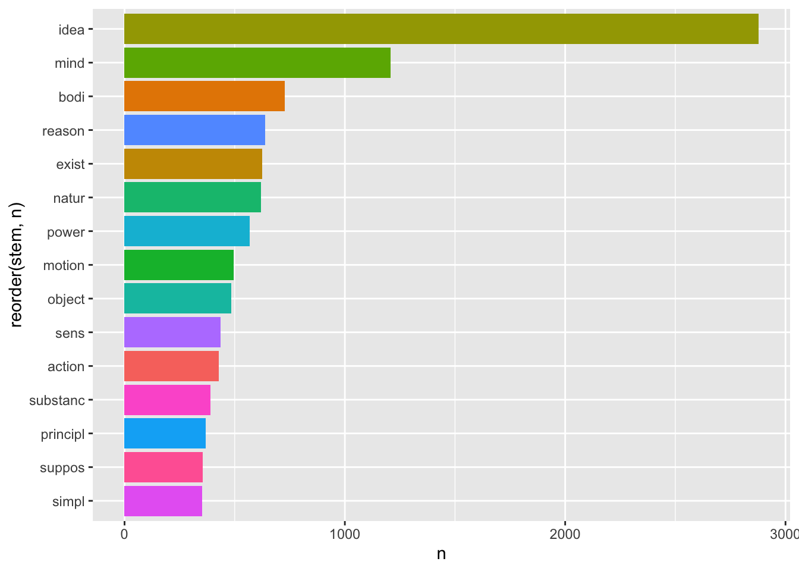
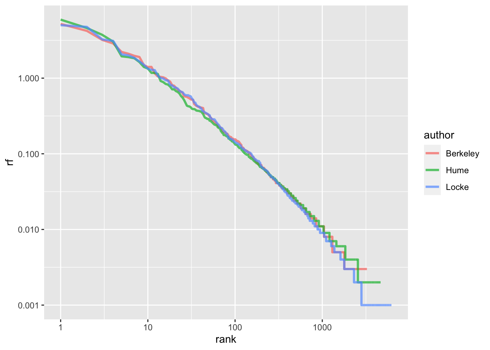
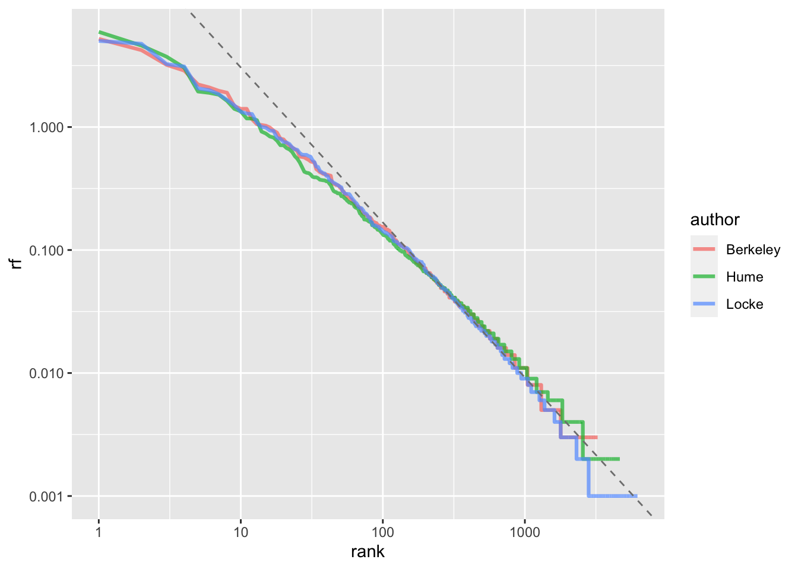
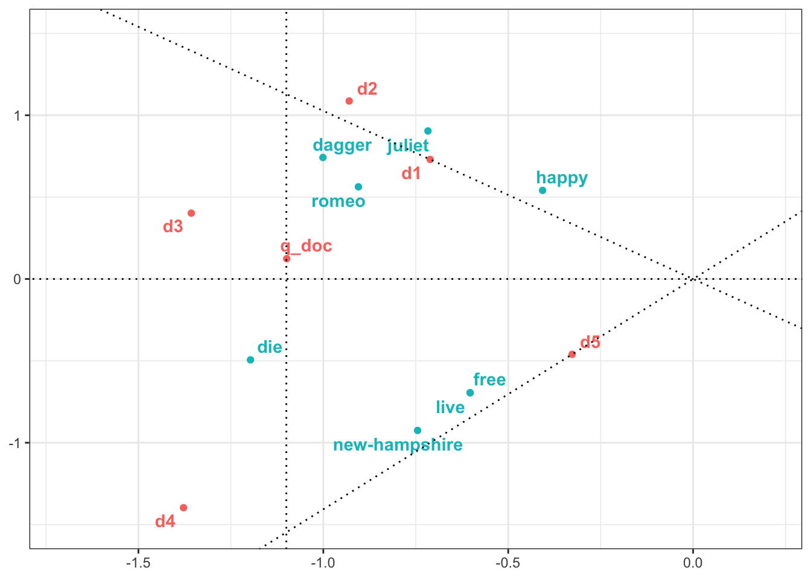
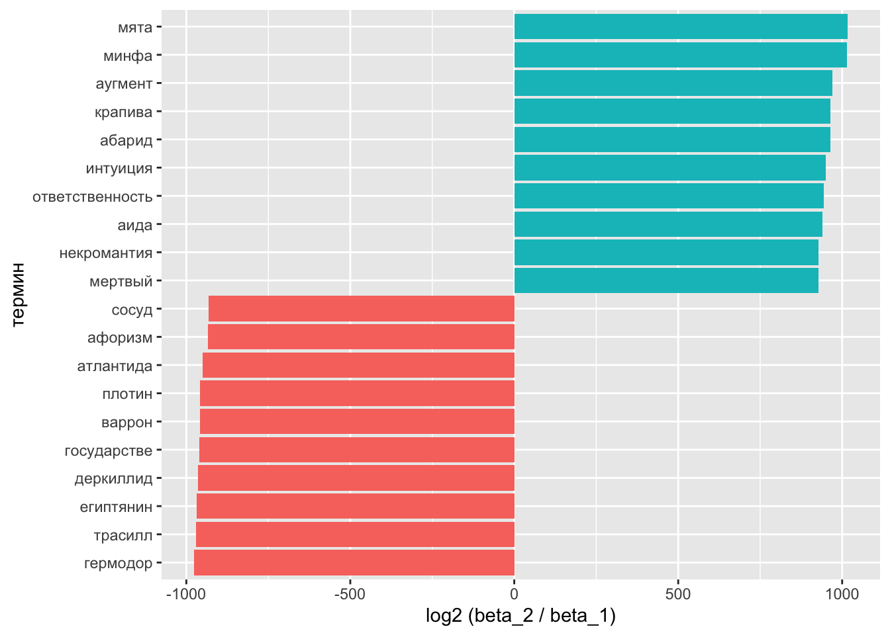
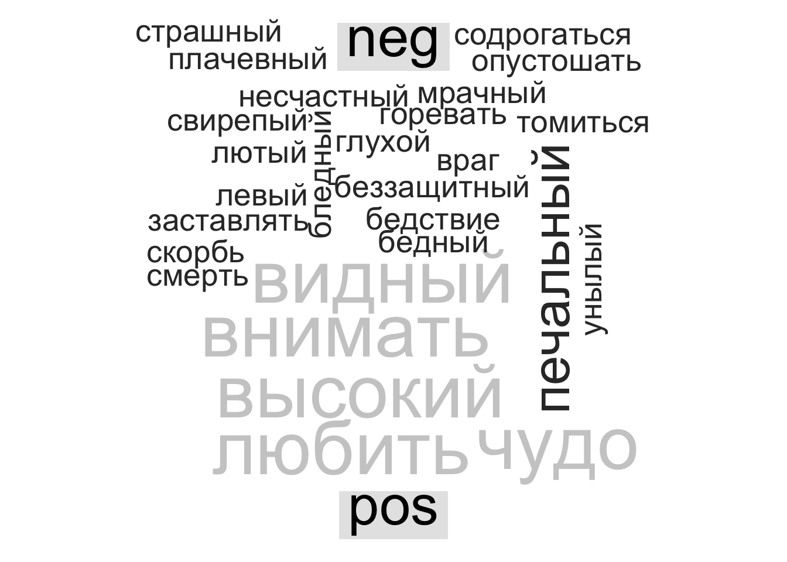

Тема 15 Кластеризация и метод главных компонент
15.1 Виды кластерного анализа
Все методы машинного обучения делятся на методы обучения с учителем и методы обучения без учителя. В первом случае у нас есть некоторое количество признаков X, измеренных у n объектов, и некоторый отклик Y. Задача заключается в предсказании Y по X. Например, мы измерили вес и пушистость у сотни котов известных пород, и хотим предсказать породу других котов, зная их вес и пушистость.
Обучение без учителя предназначено для случаев, когда у нас есть только некоторый набор признаков X, но нет значения отклика. Например, есть группа котов, для которых мы измерили вес и пушистость, но мы не знаем, на какие породы они делятся.
Кластеризация относится к числу методов для обнаружения неизвестных групп (кластеров) в данных. Точнее, это целый набор методов. Мы рассмотрим два из них: - кластеризация по методу K средних - иерархическая кластеризация
В случае с кластеризацией по методу K средних мы пытаемся разбить наблюдения на некоторое заранее заданное число кластеров. Иерархическая кластеризация возвращает результат в виде дерева (дендрограммы), которая позволяет увидеть все возможные кластеры.
15.2 Кластеризация по методу K средних
Алгоритм кластеризации:
- Каждому наблюдению присваивается случайно выбранное число из интервала от 1 до K (число кластеров). Это исходные метки

Вычисляется центроид для каждого из кластеров. Центроид k-го класса – вектор из p средних значений признаков, описывающих наблюдения из этого кластера;
Каждому наблюдению присваивается метка того кластера, чей центроид находится ближе всего к этому наблюдению (удаленность выражается обычно в виде евклидова расстояния)
Повторить шаги 2-3 до тех пор, пока метки классов не станут изменяться.
Это дает возможность минимизировать внутрикластерный разброс: хорошей считается такая кластеризация, при которой такой разброс минимален.
Когда центроиды двигаются, кластеры приобретают и теряют документы.

Внутрикластерный разброс в кластере k – это сумма квадратов евклидовых расстояний между всеми парами наблюдений в этом кластере, разделенная на общее число входящих в него наблюдений.
15.3 K-means в R
Рассмотрим это сначала на симулированных, а затем на реальных данных.
set.seed(2)
x = matrix(rnorm(50 * 2), ncol = 2)
x[1:25, 1:2] = x[1:25, 1:2] + 3
x[26:50, 1:2] = x[1:25, 1:2] - 4## [1] 1 1 1 1 1 1 1 1 1 1 1 1 1 1 1 1 1 1 1 1 1 1 1 1 1 2 2 2 2 2 2 2 2 2 2 2 2 2
## [39] 2 2 2 2 2 2 2 2 2 2 2 2Наблюдения разделились идеально. Вот так выглядят наши центроиды:
## Warning: The `x` argument of `as_tibble.matrix()` must have unique column
## names if `.name_repair` is omitted as of tibble 2.0.0.
## ℹ Using compatibility `.name_repair`.
## This warning is displayed once every 8 hours.
## Call `lifecycle::last_lifecycle_warnings()` to see where this
## warning was generated.## # A tibble: 2 × 2
## V1 V2
## <dbl> <dbl>
## 1 3.33 2.92
## 2 -0.666 -1.08library(tidyverse)
as_tibble(x) %>%
ggplot(aes(V1, V2, color = km.out$cluster)) +
geom_point(show.legend = F) +
geom_point(data = centers, color = "deeppink3",
size = 3, alpha = 0.7)
Аргумент nstart позволяет запустить алгоритм функции несколько раз с разными начальными метками кластеров; функциия вернет наилучший результат.
15.4 K-means для кластеризации текстов
Я воспользуюсь данными из пакета stylo, где хранятся частотности 3000 наиболее частотных слов для 26 книг 5 авторов. Один из этих авторов – таинственный Роберт Гэлбрейт, как выяснилось – псевдоним Джоан Роулинг.
## the and to of a
## coben_breaker 3.592199 1.175108 2.162724 1.375736 2.518600
## coben_dropshot 3.587836 1.178543 2.122161 1.268598 2.375359
## coben_fadeaway 3.931392 1.445498 2.200406 1.213044 2.306477
## coben_falsemove 3.625411 1.613339 2.133533 1.236688 2.400991
## coben_goneforgood 3.834031 1.816723 2.152941 1.175808 1.961908
## coben_nosecondchance 4.098293 1.588967 2.271255 1.205863 1.992137Применим к этим данным функцию kmeans. Этот датасет имеет формат stylo.data, поэтому сначала его трансформируем. Также уменьшим число переменных с 3000 до 200.
set.seed(2)
galbraith <- as.data.frame.matrix(galbraith)[,1:200]
km.out <- kmeans(galbraith, centers = 5, nstart = 20)
km.out$cluster## coben_breaker coben_dropshot coben_fadeaway
## 5 5 5
## coben_falsemove coben_goneforgood coben_nosecondchance
## 5 1 1
## coben_tellnoone galbraith_cuckoos lewis_battle
## 1 4 3
## lewis_caspian lewis_chair lewis_horse
## 3 3 3
## lewis_lion lewis_nephew lewis_voyage
## 3 3 3
## rowling_casual rowling_chamber rowling_goblet
## 4 2 2
## rowling_hallows rowling_order rowling_prince
## 2 2 2
## rowling_prisoner rowling_stone tolkien_lord1
## 2 2 3
## tolkien_lord2 tolkien_lord3
## 3 3library(stringr)
expected <- str_remove_all(names(km.out$cluster), "_.*")
tibble(expected = expected,
predicted = km.out$cluster) %>%
group_by(expected) %>%
count(predicted)## # A tibble: 7 × 3
## # Groups: expected [5]
## expected predicted n
## <chr> <int> <int>
## 1 coben 1 3
## 2 coben 5 4
## 3 galbraith 4 1
## 4 lewis 3 7
## 5 rowling 2 7
## 6 rowling 4 1
## 7 tolkien 3 3Поскольку у нас многомерные данные, придется использовать метод главных компонент, чтобы изобразить их графически. Об этом методе я скажу ниже.
15.5 Нормализация данных
Формула расстояния зависит от способа измерения объектов. Если одни объекты имеют больший разброс значений, чем другие, то при вычислении расстояний будут преобладать элементы с более широкими диапазонами.
## # A tibble: 200 × 2
## word V1
## <chr> <dbl>
## 1 the 0.377
## 2 and 0.763
## 3 to 0.0303
## 4 of 0.227
## 5 a 0.0654
## 6 was 0.0290
## 7 I 0.825
## 8 in 0.0160
## 9 he 0.0876
## 10 said 0.0631
## # ℹ 190 more rowsПеред применением алгоритма в некоторых случаях рекомендуется изменить масштабы признаков, чтобы каждый из них вносил в формулу расстояния примерно равный вклад.
Распространенное преобразование называется стандартизацией по Z-оценке: из значения признака Х вычитается среднее арифметическое, а результат делится на стандартное отклонение Х.
\[ X_{new} = \frac{X - Mean(X)}{StDev(X)}\]
Снова проведем кластеризацию:
set.seed(2)
km_out_norm <- kmeans(galbraith_norm, centers = 5, nstart = 20)
tibble(expected = expected,
predicted = km_out_norm$cluster) %>%
group_by(expected) %>%
count(predicted)## # A tibble: 6 × 3
## # Groups: expected [5]
## expected predicted n
## <chr> <int> <int>
## 1 coben 3 7
## 2 galbraith 5 1
## 3 lewis 2 7
## 4 rowling 1 7
## 5 rowling 5 1
## 6 tolkien 4 3Почти все авторы разошлись по разным кластерам (кроме Роулинг), при этом Гэлбрейт в одном кластере с Роулинг.
15.6 Иерархическая кластеризация
Одним из недостатков кластеризации по методу K средних является то, что она требует предварительно указать число кластеров. Этого недостатка лишена иерархическая кластеризация. Если такая кластеризация происходит “снизу вверх”, она называется агломеративной. При этом построение дендрограммы начинается с “листьев” и продолжается вплоть до самого “ствола”.

При интерпретации дерева надо иметь в виду, что существует \(2^{n-1}\) способов упорядочения ветвей дендрограммы, где n – это число листьев. В каждой из точек слияния можно поменять местами наблюдения, не изменяя смысла дендрограммы. Поэтому выводы о сходстве двух наблюдений нельзя делать на основе из близости по горизонтальной оси. См. Рис. 10.10 из книги “Введение в статистическое обучение”, с. 423). На рисунке видно, что наблюдение 9 похоже на наблюдение 2 не больше, чем оно похоже на наблюдения 8, 5 и 7. Вместо этого выводы делаются, исходя из положения на вертикальной оси той точки, где происходит слияние наблюдений.
Количество кластеров определеяется высотой, на которой мы разрезаем дендрограмму.

Из этого следует, что одну и ту же дендрограмму можно использовать для получения разного числа кластеров.
15.7 Алгоритм иерархической кластеризации
Вычислить меру различия для всех пар наблюдений. На первом шаге все наблюдения рассматриваются как отдельный кластер.
Найти пару наиболее похожих кластеров и объединить их. Различие между кластерами соответствует высоте, на которой происходит их слияние в дендрограмме.
Повторить шаги 1-2, пока не останется 1 кластер.

Вид дерева будет зависеть от того, какой тип присоединения вы выберете. На рисунке ниже представлено три способа: полное, одиночное, среднее.

Обычно предпочитают среднее и полное, т.к. они приводят к более сбалансированным дендрограммам.

Для функции hclust() в R по умолчанию выставлено значение аргумента method = "complete".
15.8 Иерархическая кластеризация в R
Применим алгоритм к симулированным данным, которые мы создали выше. Функция dist() по умолчанию считает евклидово расстояние.
 На картинке видно, что наблюдения из верхих и нижних рядов почти идеально разделились на два кластера.
15.9 Иерархическая кластеризация текстов
Для вычисления расстояния между текстами лучше подойдет не евклидово, а косинусное расстояние на нормализованных данных. В базовой dist() его нет, поэтому воспользуемся пакетом philentropy.
## Metric: 'cosine'; comparing: 26 vectors.Преобразуем меру сходства в меру расстояния и передадим на кластеризацию.

Для получения меток кластеров, возникающих в результате рассечения дендрограммы на той или иной высоте, можно воспользоваться функцией cutree().
## coben_breaker coben_dropshot coben_fadeaway
## 1 1 1
## coben_falsemove coben_goneforgood coben_nosecondchance
## 1 1 1
## coben_tellnoone galbraith_cuckoos lewis_battle
## 1 2 3
## lewis_caspian lewis_chair lewis_horse
## 3 3 3
## lewis_lion lewis_nephew lewis_voyage
## 3 3 3
## rowling_casual rowling_chamber rowling_goblet
## 2 4 4
## rowling_hallows rowling_order rowling_prince
## 4 4 4
## rowling_prisoner rowling_stone tolkien_lord1
## 4 4 5
## tolkien_lord2 tolkien_lord3
## 5 5Этим меткам можно назначить свой цвет.
library(dendextend)
hcd <- as.dendrogram(hc)
par(mar=c(2,2,2,7))
hcd %>%
set("branches_k_color", k = 5) %>%
set("labels_col", k=5) %>%
plot(horiz = TRUE)
abline(v=0.8, col="pink4",lty=2)
Результат как иерархической кластеризации, так и кластеризации по методу K средних многомерных данных можно визуализировать в двумерном пространстве, если предварительно применить к данным метод главных компонент.
15.10 Метод главных компонент
Метод главных компонент (англ. principal component analysis, PCA) — один из основных способов уменьшить размерность данных, потеряв наименьшее количество информации. Этот метод привлекается, в частности, когда надо визуализировать многомерные данные.
Общий принцип хорошо объясняется Гаральдом Баайеном (с. 119).

Серый цвет верхнего левого куба означает, что точки распределены равномерно – нужны все три измерения для того, чтобы описать положение точки в кубе. Куб справа сверху по-прежнему имеет три измерения, но нам достаточно только двух, вдоль которых рассеяны данные. Куб слева снизу тоже имеет два измерения, но вдоль оси y разброс данных меньше, чем вдоль x. Наконец, для куба справа снизу достаточно только одного измерения.
Метод главных компонент ищет такие измерения, вдоль которых наблюдается наибольший разброс данных, причем каждая следующая компонента будет объяснять меньше разброса.
## [1] "sdev" "rotation" "center" "scale" "x"Первый элемент хранит данные о стандартном отклонении, соответствующем каждой компоненте.
## [1] 8.118 6.282 4.816 3.480 3.218 2.660 2.236 2.042 1.975 1.875 1.811 1.681
## [13] 1.555 1.514 1.478 1.339 1.288 1.266 1.173 1.122 1.104 1.031 0.985 0.900
## [25] 0.747 0.000Это можно узнать также, вызвав функцию summary.
## Importance of components:
## PC1 PC2 PC3 PC4 PC5 PC6 PC7
## Standard deviation 8.1180 6.2824 4.8161 3.47962 3.21811 2.65990 2.2362
## Proportion of Variance 0.3295 0.1973 0.1160 0.06054 0.05178 0.03538 0.0250
## Cumulative Proportion 0.3295 0.5269 0.6428 0.70336 0.75514 0.79052 0.8155
## PC8 PC9 PC10 PC11 PC12 PC13 PC14
## Standard deviation 2.04233 1.9748 1.87495 1.81070 1.68115 1.55528 1.51356
## Proportion of Variance 0.02086 0.0195 0.01758 0.01639 0.01413 0.01209 0.01145
## Cumulative Proportion 0.83638 0.8559 0.87345 0.88985 0.90398 0.91607 0.92753
## PC15 PC16 PC17 PC18 PC19 PC20 PC21
## Standard deviation 1.47822 1.33897 1.2882 1.26627 1.17319 1.12184 1.1044
## Proportion of Variance 0.01093 0.00896 0.0083 0.00802 0.00688 0.00629 0.0061
## Cumulative Proportion 0.93845 0.94742 0.9557 0.96373 0.97061 0.97690 0.9830
## PC22 PC23 PC24 PC25 PC26
## Standard deviation 1.03061 0.98464 0.89953 0.74739 0.000000000000007917
## Proportion of Variance 0.00531 0.00485 0.00405 0.00279 0.000000000000000000
## Cumulative Proportion 0.98831 0.99316 0.99721 1.00000 1.000000000000000000Доля дисперсии – это стандартное отклонение в квадрате, деленное на сумму стандартных отклонений в квадрате. Проверим:
## [1] 0.3295 0.1973 0.1160 0.0605 0.0518 0.0354 0.0250 0.0209 0.0195 0.0176
## [11] 0.0164 0.0141 0.0121 0.0115 0.0109 0.0090 0.0083 0.0080 0.0069 0.0063
## [21] 0.0061 0.0053 0.0048 0.0040 0.0028 0.0000Таким образом, первые две компоненты объясняют почти половину дисперсии, а последняя почти не имеет объяснительной ценности.

Координаты текстов в новом двумерном пространстве, определяемом первыми двумя компонентами, хранятся в элементе под названием x.
## PC1 PC2
## coben_breaker -10.785778 4.404143
## coben_dropshot -11.398234 5.447163
## coben_fadeaway -10.965308 5.078609
## coben_falsemove -10.713951 5.026340
## coben_goneforgood -9.801369 6.762709
## coben_nosecondchance -8.863422 7.718594Нагрузки каждой компоненты хранятся в матрице ротации. Интерпретировать компоненты как таковые невозможно – они представляют собой линейную комбинацию признаков. В математическом смысле главные компоненты представляют собой собственные векторы ковариационной матрицы исходных данных.
## PC1 PC2 PC3
## the 0.11444948 -0.010111871 -0.033517351
## and 0.11909663 -0.003730939 -0.004220942
## to -0.02633009 -0.120943864 0.054843337
## of 0.11247527 -0.049333413 -0.024504809
## a -0.03283274 0.095953943 0.078496580
## was -0.05525161 0.026979254 0.087428282Число рядов в этой матрице равно числу исходных измерений (слов); т.е. для каждого слова указаны его координаты в новом измерении.
## [1] 200 3Изобразить вместе главные компоненты и тексты позволяет функция biplot() (на нормализованных данных получается совсем не читаемо, поэтому демонстрирую на исходных).

15.11 PCA для визуализации кластеров K-means
Функция augment() из пакета broom позволяет соединить результат кластеризации (в данном случае – по методу K средних) с исходными данными.
library(broom)
pca_fit %>%
augment(galbraith) %>%
ggplot(aes(.fittedPC1, .fittedPC2,
color = expected, shape = as.factor(km.out$cluster))) +
geom_point(size = 3, alpha = 0.7)
В таком же “опрятном” виде можем представить и нагрузки компонент. Для наглядности вывожу только первые 30 слов.
##
## Attaching package: 'cowplot'## The following object is masked from 'package:lubridate':
##
## stamp##
## Attaching package: 'grid'## The following object is masked from 'package:emoji':
##
## arrow# как будет выглядеть стрелка
arrow_style <- arrow(
angle = 20, ends = "first", type = "closed", length = grid::unit(8, "pt")
)
pca_fit %>%
tidy(matrix = "rotation") %>%
pivot_wider(names_from = "PC", names_prefix = "PC", values_from = "value") %>%
filter(row_number() %in% c(1:30)) %>%
ggplot(aes(PC1, PC2)) +
geom_segment(xend = 0, yend = 0, arrow = arrow_style, color = "darkgrey") +
geom_text(
aes(label = column),
hjust = 1, nudge_x = -0.02,
color = "#904C2F",
alpha = 0.7
) +
theme_minimal_grid(10) +
coord_fixed()
15.12 PCA и иерархическая кластеризация
Код почти как выше, но надо указать, на сколько кластеров мы разрезаем дерево.
pca_fit %>%
augment(galbraith) %>%
ggplot(aes(.fittedPC1, .fittedPC2,
color = expected, shape = as.factor(cutree(hc, 5)))) +
geom_point(size = 3, alpha = 0.7)
15.13 Многомерное шкалирование
Кроме этого, для визуализации многомерных данных применяют многомерное шкалирование. Функция получает на входе матрицу расстояний.
## # A tibble: 6 × 2
## V1 V2
## <dbl> <dbl>
## 1 -0.651 -0.425
## 2 -0.596 -0.463
## 3 -0.622 -0.471
## 4 -0.605 -0.452
## 5 -0.490 -0.532
## 6 -0.396 -0.612cmd_fit %>%
ggplot(aes(V1, V2,
color = expected,
shape = as.factor(cutree(hc, 5)))) +
geom_point(size = 3, alpha = 0.7)
Многомерное шкалирование стремится отразить расстояния между наблюдениями.
15.14 PCA с FactoMineR
Для вычисления главных компонент в R есть множество инструментов помимо базовых. Для наглядности я пока возьму лишь 10 первых переменных (иначе будет сложно объяснить, что происходит на графике).
## **Results for the Principal Component Analysis (PCA)**
## The analysis was performed on 26 individuals, described by 10 variables
## *The results are available in the following objects:
##
## name description
## 1 "$eig" "eigenvalues"
## 2 "$var" "results for the variables"
## 3 "$var$coord" "coord. for the variables"
## 4 "$var$cor" "correlations variables - dimensions"
## 5 "$var$cos2" "cos2 for the variables"
## 6 "$var$contrib" "contributions of the variables"
## 7 "$ind" "results for the individuals"
## 8 "$ind$coord" "coord. for the individuals"
## 9 "$ind$cos2" "cos2 for the individuals"
## 10 "$ind$contrib" "contributions of the individuals"
## 11 "$call" "summary statistics"
## 12 "$call$centre" "mean of the variables"
## 13 "$call$ecart.type" "standard error of the variables"
## 14 "$call$row.w" "weights for the individuals"
## 15 "$call$col.w" "weights for the variables"Первый элемент списка указывает, какие компоненты наиболее важны.
## eigenvalue percentage of variance cumulative percentage of variance
## comp 1 4.52 45.22 45.22
## comp 2 2.01 20.10 65.32
## comp 3 1.25 12.49 77.80
## comp 4 1.00 10.04 87.84
## comp 5 0.65 6.51 94.36
## comp 6 0.25 2.48 96.84
При визуализации аргументы shadow и autoLab отвечают за то, чтобы график хорошо читался.
plot(pca_object, shadow=T, autoLab = "yes", choix = "var", new.plot = F, title = "", col.var = "grey40")
Получившийся график называется круг корреляции, и его следует понимать так:
- положительно коррелированные переменные находятся рядом;
- отрицательно коррелированные переменные находятся в противоположных квадрантах.
Например, для первого измерения “was” и “said” коррелированы отрицательно. Это можно проверить, достав соответствующую матрицу из объекта pca (в качестве координат используются коэффициенты корреляции между переменными и компонентами):
## Dim.1 Dim.2
## the 0.8689963 0.3902929
## and 0.8742646 0.3402297
## to 0.1047163 -0.7956915
## of 0.9616110 0.1330286
## a -0.4990659 0.2415379
## was -0.5991994 -0.0562630
## I -0.6696186 0.4825492
## in 0.5942257 0.4725278
## he 0.7394596 -0.4860312
## said 0.3317503 -0.5806990Построим графикк с наблюдениями, а не с переменными:
